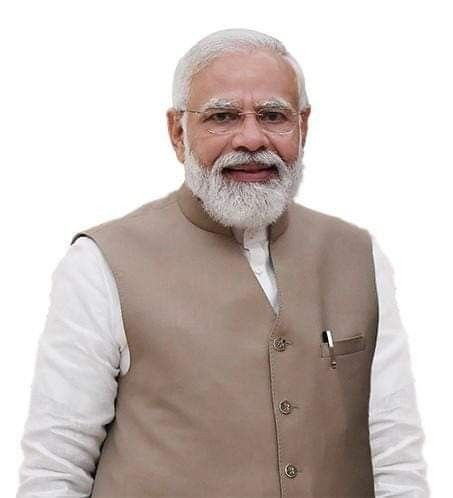
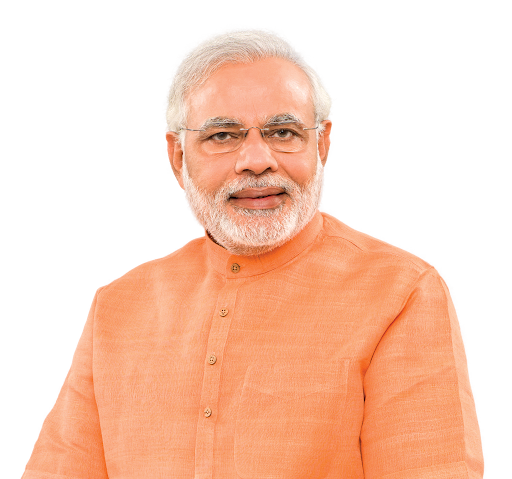
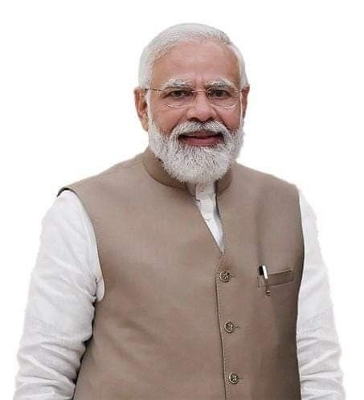
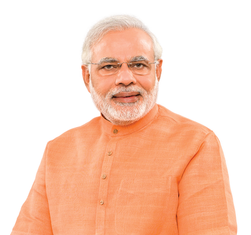

Narendra Modi
He is the longest-serving prime minister outside the Indian National Congress. Modi was born and raised in Vadnagar, Bombay State (present-day Gujarat), where he completed his secondary education. He was introduced to the RSS at the age of eight, becoming a full-time worker for the organisation in Gujarat in 1971.
Social Media Profile Links
- Instagram
- Twitter
- Wikipedia
Most Recent Blogs
- 8 major achievements
- Article 370 of the Constitution of India
- Skilling India: Empowering the Workforce
Most Recent Work For India
- Pradhan Mantri Jan Dhan Yojana (financial inclusion)
- Pradhan Mantri Ujjwala Yojana (LPG connections to rural women)
- Pradhan Mantri Awas Yojana (housing for all)
- Swachh Bharat Mission (nationwide sanitation campaign).
- Ayushman Bharat (world's largest health protection scheme).
- Education & Skill Development
- Pradhan Mantri Kaushal Vikas Yojana